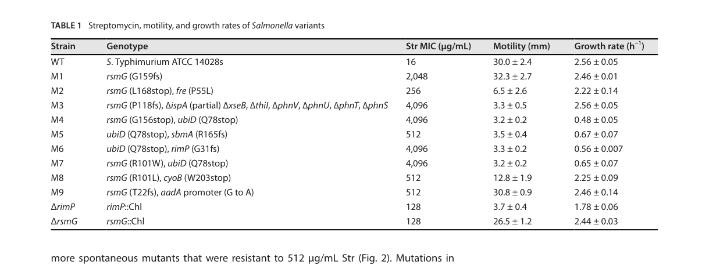

rsmG (PP_0003) encodes the SAM-dependent 16S rRNA (guanine527-N7)-methyltransferase RsmG (also known as GidB; EC 2.1.1.170), which installs the m7G modification at the conserved guanosine G527 (E. coli numbering) in the 530 loop/helix 18 of 16S rRNA near the decoding center. The enzyme is cytosolic and acts during 30S ribosomal small subunit biogenesis, preferentially on immature/premature small-subunit rRNA. Across multiple bacteria, loss of RsmG removes the m7G527 modification and confers low-level streptomycin resistance and can facilitate stepwise evolution to higher-level resistance. For P. putida KT2440 specifically, the functional assignment is high-confidence homology-based inference (no KT2440-specific primary experimental study is available).
| GO Term | Evidence | Action | Reason |
|---|---|---|---|
|
GO:0005737
cytoplasm
|
IEA
GO_REF:0000120 |
KEEP AS NON CORE |
Summary: The cytoplasm annotation is correct for RsmG, a soluble cytosolic rRNA methyltransferase that acts on ribosomal RNA during cytoplasmic ribosome biogenesis.
Reason: RsmG is a soluble cytoplasmic rRNA methyltransferase; location is accurate and consistent with the deep-research description of a cytosolic enzyme acting on rRNA, but it is supporting context rather than the core function.
Supporting Evidence:
file:PSEPK/rsmG/rsmG-uniprot.txt
SUBCELLULAR LOCATION: Cytoplasm
file:PSEPK/rsmG/rsmG-goa.tsv
GO:0005737 cytoplasm
file:PSEPK/rsmG/rsmG-deep-research-falcon.md
RsmG is a **cytosolic** enzyme acting on ribosomal RNA
|
|
GO:0005829
cytosol
|
IEA
GO_REF:0000118 |
KEEP AS NON CORE |
Summary: The cytosol annotation is broadly consistent with cytoplasmic localization but redundant with the cytoplasm term in this bacterial context.
Reason: The UniProt cytoplasm annotation is sufficient location context for this soluble enzyme; the deep research likewise describes RsmG as a cytosolic enzyme acting on ribosomal RNA.
Supporting Evidence:
file:PSEPK/rsmG/rsmG-uniprot.txt
SUBCELLULAR LOCATION: Cytoplasm
file:PSEPK/rsmG/rsmG-goa.tsv
GO:0005829 cytosol
file:PSEPK/rsmG/rsmG-deep-research-falcon.md
RsmG is a **cytosolic** enzyme acting on ribosomal RNA
|
|
GO:0006364
rRNA processing
|
IEA
GO_REF:0000120 |
MARK AS OVER ANNOTATED |
Summary: This rRNA processing annotation is true but less specific than rRNA guanine-N7 methylation; RsmG installs a single m7G modification rather than performing rRNA cleavage/processing per se.
Reason: The specific process GO:0070476 (rRNA guanine-N7 methylation) is already present in GOA and captures the actual reaction. The deep research describes RsmG installing the m7G modification at G527 during 30S small subunit biogenesis, which is better represented by the specific methylation term (and, for the broader role, ribosomal small subunit biogenesis) than by the generic rRNA processing parent.
Supporting Evidence:
file:PSEPK/rsmG/rsmG-uniprot.txt
N7 position of guanine
file:PSEPK/rsmG/rsmG-goa.tsv
GO:0006364 rRNA processing
file:PSEPK/rsmG/rsmG-deep-research-falcon.md
installs the **m7G modification** at the conserved guanosine **G527 (E. coli numbering)**
|
|
GO:0008649
rRNA methyltransferase activity
|
IEA
GO_REF:0000002 |
MARK AS OVER ANNOTATED |
Summary: rRNA methyltransferase activity is a correct but generic parent; the specific child GO:0070043 (rRNA guanine-N7-methyltransferase activity) is already annotated and is the informative molecular function for RsmG.
Reason: The specific term GO:0070043 captures the modified base (guanine) and N7 position class and is already present in GOA. The deep research confirms the reaction is transfer of a methyl group from SAM/AdoMet to the N7 atom of guanine on 16S rRNA, so the precise guanine-N7 term should be the representative molecular function and this generic rRNA methyltransferase parent is redundant.
Supporting Evidence:
file:PSEPK/rsmG/rsmG-uniprot.txt
N7 position of guanine
file:PSEPK/rsmG/rsmG-goa.tsv
GO:0008649 rRNA methyltransferase activity
file:PSEPK/rsmG/rsmG-deep-research-falcon.md
transfer of a methyl group from **SAM/AdoMet** to the **N7 atom of guanine**
|
|
GO:0070043
rRNA (guanine-N7-)-methyltransferase activity
|
IEA
GO_REF:0000120 |
ACCEPT |
Summary: RsmG-specific rRNA (guanine-N7-)-methyltransferase activity is the core molecular function, a SAM-dependent transfer of a methyl group to the N7 of guanine 527 in 16S rRNA.
Reason: UniProt assigns EC 2.1.1.170 and describes methylation of guanine 527 in 16S rRNA. The deep research independently characterizes RsmG/GidB as a SAM-dependent 16S rRNA guanine-N7 methyltransferase, with cross-species biochemical mapping of the modified site, supporting this as the core molecular function.
Supporting Evidence:
file:PSEPK/rsmG/rsmG-uniprot.txt
Specifically methylates the N7 position of guanine
file:PSEPK/rsmG/rsmG-uniprot.txt
EC=2.1.1.170
file:PSEPK/rsmG/rsmG-goa.tsv
GO:0070043 rRNA (guanine-N7-)-methyltransferase activity
file:PSEPK/rsmG/rsmG-deep-research-falcon.md
S-adenosyl-L-methionine (SAM/AdoMet)-dependent 16S rRNA guanine-N7 methyltransferase
file:PSEPK/rsmG/rsmG-deep-research-falcon.md
transfer of a methyl group from **SAM/AdoMet** to the **N7 atom of guanine**
|
|
GO:0070476
rRNA (guanine-N7)-methylation
|
IEA
GO_REF:0000108 |
ACCEPT |
Summary: rRNA guanine-N7 methylation is the correct biological process for RsmG, installing the m7G modification at the conserved G527 of 16S rRNA during small subunit biogenesis.
Reason: RsmG methylates the N7 position of guanine 527 in 16S rRNA. The deep research confirms RsmG installs the m7G modification at the conserved guanosine G527 (E. coli numbering) in the 530 loop/helix 18, making rRNA guanine-N7 methylation the precise biological process.
Supporting Evidence:
file:PSEPK/rsmG/rsmG-uniprot.txt
N7 position of guanine in
file:PSEPK/rsmG/rsmG-goa.tsv
GO:0070476 rRNA (guanine-N7)-methylation
file:PSEPK/rsmG/rsmG-deep-research-falcon.md
installs the **m7G modification** at the conserved guanosine **G527 (E. coli numbering)**
|
Q: Does loss of RsmG affect aminoglycoside susceptibility or translational fidelity in KT2440?
Q: Does P. putida KT2440 rsmG inactivation confer the low-level streptomycin resistance and enable stepwise high-level resistance seen in other bacteria (e.g. Salmonella, B. subtilis, S. coelicolor)?
Experiment: Compare 16S rRNA m7G527 modification, growth, and aminoglycoside susceptibility in rsmG knockout and complemented strains.
Type: rRNA modification and antibiotic phenotype assay
The research report should be a detailed narrative explaining the function, biological processes, and localization of the gene product. Citations should be given for all claims.
You should prioritize authoritative reviews and primary scientific literature when conducting research. You can supplement
this with annotations you find in gene/protein databases, but these can be outdated or inaccurate.
We are specifically interested in the primary function of the gene - for enzymes, what reaction is catalyzed, and what is the substrate specificity? For transporters, what is the substrate? For structural proteins or adapters, what is the broader structural role? For signaling molecules, what is the role in the pathway.
We are interested in where in or outside the cell the gene product carries out its function.
We are also interested in the signaling or biochemical pathways in which the gene functions. We are less interested in broad pleiotropic effects, except where these elucidate the precise role.
Include evidence where possible. We are interested in both experimental evidence as well as inference from structure, evolution, or bioinformatic analysis. Precise studies should be prioritized over high-throughput, where available.
The Pseudomonas putida KT2440 gene rsmG (UniProt P0A124) encodes a conserved S-adenosyl-L-methionine (SAM/AdoMet)-dependent 16S rRNA guanine-N7 methyltransferase (also known as GidB) that installs the m7G modification at the conserved guanosine G527 (E. coli numbering) in the 530 loop/helix 18 region of 16S rRNA, near the decoding center. This modification is widely conserved and is implicated in tuning translation fidelity and aminoglycoside (especially streptomycin) susceptibility. For P. putida specifically, direct primary experimental studies of PP_0003/P0A124 were not retrieved in the current evidence set; therefore, functional assignment is high-confidence homology-based inference supported by conserved enzyme family behavior and mechanistic studies in multiple bacterial models. (garinmurguialdayUnknownyearmanuscritov pages 224-226, benitezpaez2012regulationofexpression pages 1-2, nishimura2007identificationofthe pages 2-3)
| Claim/Concept | Evidence summary | Species/model | Source (with URL + year) | Notes/limits |
|---|---|---|---|---|
| Verified identity of rsmG/GidB | rsmG (also called gidB) is a 16S rRNA m7G methyltransferase; annotation in retrieved evidence lists EC 2.1.1.170 and describes the product as a (guanine(527)-N7)-methyltransferase acting on 16S rRNA, with cytosolic localization. This matches the UniProt target description for P0A124 and supports assignment to the conserved GidB/RsmG RNA methyltransferase family. (garinmurguialdayUnknownyearmanuscritov pages 224-226) | General bacterial annotation; target is Pseudomonas putida KT2440 by UniProt context | Garín-Murguialday & Márquez-Urbano, “Manuscrito V” (unknown year/journal; URL unavailable in retrieved text); annotation excerpt via retrieved context. (garinmurguialdayUnknownyearmanuscritov pages 224-226) | Direct experimental evidence for P. putida KT2440 PP_0003/P0A124 was not retrieved; identity is supported mainly by UniProt-supplied naming/domain context plus cross-species conservation. |
| Biochemical reaction and modified site | Retrieved papers describe RsmG/GidB as methylating G527 of 16S rRNA in E. coli numbering, producing an m7G modification near the decoding center; additional cited text places the modified guanosine in the 16S rRNA 530 loop (e.g., G518 in M. tuberculosis numbering). (lyu2024inactivationofthe pages 1-3, lyu2024deficiencyinribosome pages 1-4, lyu2024inactivationofthe pages 11-12) | Salmonella enterica, E. coli numbering convention, Mycobacterium tuberculosis numbering convention | Lyu et al., Antimicrob. Agents Chemother. 2024, https://doi.org/10.1128/aac.00002-24 ; Lyu et al., bioRxiv 2024, https://doi.org/10.1101/2024.01.08.574728 (lyu2024inactivationofthe pages 1-3, lyu2024deficiencyinribosome pages 1-4, lyu2024inactivationofthe pages 11-12) | Exact nucleotide numbering can vary by species; the conserved concept is methylation of the homologous guanosine in the 530 loop/decoding-center region. |
| Antibiotic-resistance phenotype | Loss or mutation of rsmG is repeatedly linked to streptomycin resistance. In the Salmonella study, deleting rsmG increased streptomycin MIC from 16 to 128 µg/mL (8-fold), and multiple evolved lineages carried rsmG frameshift/stop mutations with still higher MICs. (lyu2024inactivationofthe pages 1-3, lyu2024deficiencyinribosome pages 1-4, lyu2024deficiencyinribosome pages 13-22, lyu2024inactivationofthe media 16fe0a24) | Salmonella enterica experimental evolution and gene deletion | Lyu et al., Antimicrob. Agents Chemother. 2024, https://doi.org/10.1128/aac.00002-24 ; figure/table context showing MIC values. (lyu2024inactivationofthe pages 1-3, lyu2024inactivationofthe media 16fe0a24) | These are not P. putida measurements; they show a conserved phenotype associated with rsmG loss in other bacteria. |
| Translational fidelity phenotype | Retrieved evidence states that rsmG deletion/mutation can increase ribosomal fidelity (reduced stop-codon readthrough / reduced mistranslation), and this has been reported in Salmonella, E. coli, and M. tuberculosis. (lyu2024deficiencyinribosome pages 4-7, lyu2024inactivationofthe pages 3-6, lyu2024inactivationofthe pages 11-12) | Salmonella, E. coli, M. tuberculosis | Lyu et al., bioRxiv 2024, https://doi.org/10.1101/2024.01.08.574728 ; Lyu et al., Antimicrob. Agents Chemother. 2024, https://doi.org/10.1128/aac.00002-24 (lyu2024deficiencyinribosome pages 4-7, lyu2024inactivationofthe pages 3-6, lyu2024inactivationofthe pages 11-12) | Mechanistic interpretation is cross-species; direct translational-fidelity assays were not retrieved for P. putida KT2440. |
| Species contexts and relevance to P. putida KT2440 | Evidence directly retrieved is strongest for Salmonella and cites prior work in E. coli and M. tuberculosis. For Pseudomonas putida KT2440, relevance is presently inference only: the UniProt target P0A124/PP_0003 has the same rsmG naming, reaction annotation, and conserved family/domain assignment, supporting functional transfer of annotation to a cytosolic small-subunit rRNA methyltransferase. (garinmurguialdayUnknownyearmanuscritov pages 224-226, lyu2024inactivationofthe pages 1-3, lyu2024inactivationofthe pages 11-12) | P. putida KT2440 inferred from homology/annotation; comparator species with experiments: Salmonella, E. coli, M. tuberculosis | Annotation excerpt via retrieved context; Lyu et al. 2024 peer-reviewed and preprint articles: https://doi.org/10.1128/aac.00002-24 ; https://doi.org/10.1101/2024.01.08.574728 (garinmurguialdayUnknownyearmanuscritov pages 224-226, lyu2024inactivationofthe pages 1-3, lyu2024inactivationofthe pages 11-12) | No organism-specific primary paper for P. putida KT2440 rsmG was retrieved in the current evidence set, so conclusions for the target organism should be presented as high-confidence homology-based inference, not direct experimental proof. |
Table: This table consolidates the verified identity, biochemical role, and major phenotypes associated with rsmG/GidB, while distinguishing direct experimental evidence from cross-species inference for Pseudomonas putida KT2440.
RsmG (historically also referred to as GidB in many bacteria) is a Rossmann-like SAM-dependent methyltransferase that modifies bacterial small-subunit rRNA by methylating a single guanine in 16S rRNA to form 7-methylguanosine (m7G). Mechanistic and mapping studies show the relevant modification is m7G527 (E. coli numbering), located in the universally conserved 530 loop of 16S rRNA. (benitezpaez2012regulationofexpression pages 1-2, nishimura2007identificationofthe pages 1-2)
Reaction (biochemical definition): transfer of a methyl group from SAM/AdoMet to the N7 atom of guanine at the conserved position in 16S rRNA (G527 in E. coli numbering), yielding m7G and S-adenosyl-homocysteine (SAH/AdoHcy). SAM dependence and the identity of the modified nucleotide are directly supported by biochemical mapping and structural/cofactor-bound studies. (gregory2009structuralandfunctional pages 1-2, benitezpaez2012regulationofexpression pages 1-2, nishimura2007identificationofthe pages 1-2)
Site specificity: In Bacillus subtilis, the homologous target was experimentally mapped as G535, corresponding to E. coli G527, using chemical cleavage/primer-extension methods and nucleoside analysis; rsmG mutants lacked the m7G modification. (nishimura2007identificationofthe pages 2-3, nishimura2007identificationofthe pages 1-2)
RsmG is a cytosolic enzyme acting on ribosomal RNA (in bacteria, ribosome biogenesis is cytosolic). An rsmG annotation excerpt explicitly places the protein in the cytosol. (garinmurguialdayUnknownyearmanuscritov pages 224-226)
Mechanistically, multiple lines of evidence indicate that the physiological substrate is likely nascent 16S rRNA or an early small-subunit assembly intermediate rather than a fully mature 30S particle, and substrate preferences can vary across species. In Thermus thermophilus, maximal in vitro activity was observed on deproteinized 16S rRNA, consistent with acting during early assembly; the authors propose the biological substrate is an early assembly intermediate. (gregory2009structuralandfunctional pages 1-2, gregory2009structuralandfunctional pages 7-8)
Consistent with a ribosome biogenesis role, RsmG binds premature small-subunit rRNA with higher affinity than mature rRNA (reported as ~15× higher affinity for immature rRNA with full leader sequence than for mature 16S rRNA), suggesting RsmG can function as a biogenesis-associated factor while still catalyzing methyl transfer. (abedeera2020rsmgformsstable pages 2-3)
The m7G modification at the 530 loop is in the decoding region near the streptomycin binding site; loss of the modification is repeatedly associated with low-level streptomycin resistance and altered translation fidelity in multiple bacteria. (benitezpaez2012regulationofexpression pages 1-2, nishimura2007identificationofthe pages 1-2)
A 2024 peer-reviewed study evolved Salmonella Typhimurium in streptomycin and found rsmG mutated in 7 of 9 independent evolved lineages, indicating rsmG is a common path to increased streptomycin tolerance during adaptive evolution. (lyu2024inactivationofthe pages 1-3)
Quantitative resistance data (2024):
* Wild-type streptomycin MIC: 16 µg/mL.
* Constructed ΔrsmG mutant MIC: 128 µg/mL (8-fold increase).
* Individual evolved isolates carrying rsmG lesions showed MICs up to 2,048–4,096 µg/mL. (lyu2024inactivationofthe pages 1-3, lyu2024inactivationofthe pages 3-6)
The corresponding MIC table is captured as a cropped figure and supports these quantitative claims. (lyu2024inactivationofthe media 16fe0a24)
A 2024 preprint and its peer-reviewed counterpart frame rsmG within a broader mechanistic model in which perturbations to ribosome biogenesis and decoding-center chemistry (including loss of m7G527) reduce aminoglycoside-induced mistranslation and downstream membrane damage/leakiness, thereby reducing intracellular antibiotic accumulation and increasing apparent resistance. (lyu2024deficiencyinribosome pages 4-7, lyu2024inactivationofthe pages 3-6, lyu2024deficiencyinribosome pages 1-4)
Notably, rsmG loss in Salmonella is associated with improved ribosomal fidelity (decreased UGA stop-codon readthrough), consistent with earlier cross-species observations linking rsmG/GidB to translational accuracy. (lyu2024inactivationofthe pages 3-6, lyu2024deficiencyinribosome pages 4-7)
A 2023 mBio study on recursive genome engineering in P. putida KT2440 was retrieved but does not directly address rsmG; it nevertheless underscores KT2440’s ongoing use as a model chassis for high-resolution genotype–phenotype dissection. (lyu2024inactivationofthe pages 10-11)
A dedicated review on “the rsmG case” frames rsmG/GidB loss-of-function as a point-mutation-dependent strategy for aminoglycoside (streptomycin) resistance, and discusses the use of rsmG mutation “hot spots” as genetic traits for screening resistant isolates. This motivates rsmG as part of molecular diagnostic panels for explaining low-level streptomycin resistance (often alongside rpsL/rrs loci). (benitezpaez2014impairingmethylationsat pages 1-2, benitezpaez2014impairingmethylationsat pages 6-7)
A widely cited primary study in Streptomyces coelicolor (an industrially relevant antibiotic producer) demonstrates a direct implementation: rsmG mutations cause low-level streptomycin resistance and are associated with overproduction of actinorhodin; complementation with wild-type rsmG reverses these phenotypes. This connects rsmG to practical strain improvement strategies. (nishimura2007mutationsinrsmg pages 1-2, nishimura2007mutationsinrsmg pages 6-7)
This same work reports that spontaneous rsmG mutations occurred at approximately ~1,000-fold higher frequency than rpsL mutations in their system, underscoring rsmG as a high-accessibility evolutionary/engineering knob. (nishimura2007mutationsinrsmg pages 1-2)
Multiple mechanistic studies and a focused review converge on an interpretation that impairing m7G527 formation can yield low-level streptomycin resistance by altering local decoding-center/530-loop chemistry and streptomycin interactions. (benitezpaez2012regulationofexpression pages 1-2, benitezpaez2014impairingmethylationsat pages 1-2)
Both primary literature and review-level synthesis argue that rsmG loss-of-function can increase the likelihood of acquiring high-level streptomycin resistance mutations (e.g., in rpsL). For example, in B. subtilis rsmG mutants, emergence of high-level rpsL mutants was reported to increase by ~200-fold. (nishimura2007identificationofthe pages 1-2)
In a review-level analysis, ΔrsmG backgrounds were reported to show a 42-fold higher emergence of high-level streptomycin resistance compared with wild type (species contexts discussed include E. coli and M. tuberculosis). (benitezpaez2014impairingmethylationsat pages 6-7)
In experimental evolution of Salmonella Typhimurium in streptomycin:
* All nine parallel lineages reached growth at 128 µg/mL after three rounds (WT MIC 16 µg/mL). (lyu2024inactivationofthe pages 1-3)
* rsmG mutated in 7/9 evolved lineages. (lyu2024inactivationofthe pages 1-3)
* ΔrsmG MIC 128 µg/mL (8× WT). (lyu2024inactivationofthe pages 1-3, lyu2024inactivationofthe media 16fe0a24)
* Evolved rsmG mutants reached 2,048–4,096 µg/mL MIC in examples reported. (lyu2024inactivationofthe pages 3-6, lyu2024inactivationofthe media 16fe0a24)
Deletion of rsmG is associated with increased translational fidelity (e.g., decreased stop-codon readthrough) in the 2024 Salmonella work, supporting a mechanistic link between 530-loop chemistry and decoding accuracy. (lyu2024inactivationofthe pages 3-6, lyu2024deficiencyinribosome pages 4-7)
Given the conserved enzymology and the UniProt-provided protein identity, PP_0003/P0A124 in P. putida KT2440 is best annotated as:
* 16S rRNA (guanine(527)-N7) methyltransferase (SAM-dependent), catalyzing formation of m7G at the conserved 16S rRNA site in the 530 loop. (benitezpaez2012regulationofexpression pages 1-2, nishimura2007identificationofthe pages 1-2)
Based on multiple bacterial models, P. putida rsmG loss-of-function would be expected to:
* remove/attenuate m7G527
* produce low-level streptomycin resistance, potentially facilitating stepwise evolution to higher-level resistance under selection
* alter translational fidelity phenotypes (direction can be species/context dependent, but increased fidelity has been observed in Salmonella upon rsmG deletion). (benitezpaez2012regulationofexpression pages 1-2, lyu2024inactivationofthe pages 1-3, lyu2024inactivationofthe pages 3-6)
No KT2440/PP_0003/P0A124-specific primary experimental paper was retrieved in the current tool-assisted corpus; thus, organism-specific phenotypes for P. putida KT2440 are not claimed as direct evidence here. The functional annotation is grounded in (i) explicit mechanistic definition of the RsmG reaction across bacteria and (ii) strong conservation of the enzyme family and target site. (benitezpaez2012regulationofexpression pages 1-2, nishimura2007identificationofthe pages 1-2)
References
(garinmurguialdayUnknownyearmanuscritov pages 224-226): N Garín-Murguialday and F Márquez-Urbano. Manuscrito v. Unknown journal, Unknown year.
(benitezpaez2012regulationofexpression pages 1-2): Alfonso Benítez-Páez, Magda Villarroya, and M.-Eugenia Armengod. Regulation of expression and catalytic activity of escherichia coli rsmg methyltransferase. RNA, 18 4:795-806, Apr 2012. URL: https://doi.org/10.1261/rna.029868.111, doi:10.1261/rna.029868.111. This article has 27 citations and is from a domain leading peer-reviewed journal.
(nishimura2007identificationofthe pages 2-3): Kenji Nishimura, Shanna K. Johansen, Takashi Inaoka, Takeshi Hosaka, Shinji Tokuyama, Yasutaka Tahara, Susumu Okamoto, Fujio Kawamura, Stephen Douthwaite, and Kozo Ochi. Identification of the rsmg methyltransferase target as 16s rrna nucleotide g527 and characterization of bacillus subtilis rsmg mutants. Journal of Bacteriology, 189:6068-6073, Aug 2007. URL: https://doi.org/10.1128/jb.00558-07, doi:10.1128/jb.00558-07. This article has 72 citations and is from a peer-reviewed journal.
(lyu2024inactivationofthe pages 1-3): Zhihui Lyu, Yunyi Ling, Ambro van Hoof, and Jiqiang Ling. Inactivation of the ribosome assembly factor rimp causes streptomycin resistance and impairs motility in salmonella. Antimicrobial Agents and Chemotherapy, Apr 2024. URL: https://doi.org/10.1128/aac.00002-24, doi:10.1128/aac.00002-24. This article has 5 citations and is from a highest quality peer-reviewed journal.
(lyu2024deficiencyinribosome pages 1-4): Zhihui Lyu, Yunyi Ling, Ambro van Hoof, and Jiqiang Ling. Deficiency in ribosome biogenesis causes streptomycin resistance and impairs motility in salmonella. bioRxiv, Jan 2024. URL: https://doi.org/10.1101/2024.01.08.574728, doi:10.1101/2024.01.08.574728. This article has 0 citations.
(lyu2024inactivationofthe pages 11-12): Zhihui Lyu, Yunyi Ling, Ambro van Hoof, and Jiqiang Ling. Inactivation of the ribosome assembly factor rimp causes streptomycin resistance and impairs motility in salmonella. Antimicrobial Agents and Chemotherapy, Apr 2024. URL: https://doi.org/10.1128/aac.00002-24, doi:10.1128/aac.00002-24. This article has 5 citations and is from a highest quality peer-reviewed journal.
(lyu2024deficiencyinribosome pages 13-22): Zhihui Lyu, Yunyi Ling, Ambro van Hoof, and Jiqiang Ling. Deficiency in ribosome biogenesis causes streptomycin resistance and impairs motility in salmonella. bioRxiv, Jan 2024. URL: https://doi.org/10.1101/2024.01.08.574728, doi:10.1101/2024.01.08.574728. This article has 0 citations.
(lyu2024inactivationofthe media 16fe0a24): Zhihui Lyu, Yunyi Ling, Ambro van Hoof, and Jiqiang Ling. Inactivation of the ribosome assembly factor rimp causes streptomycin resistance and impairs motility in salmonella. Antimicrobial Agents and Chemotherapy, Apr 2024. URL: https://doi.org/10.1128/aac.00002-24, doi:10.1128/aac.00002-24. This article has 5 citations and is from a highest quality peer-reviewed journal.
(lyu2024deficiencyinribosome pages 4-7): Zhihui Lyu, Yunyi Ling, Ambro van Hoof, and Jiqiang Ling. Deficiency in ribosome biogenesis causes streptomycin resistance and impairs motility in salmonella. bioRxiv, Jan 2024. URL: https://doi.org/10.1101/2024.01.08.574728, doi:10.1101/2024.01.08.574728. This article has 0 citations.
(lyu2024inactivationofthe pages 3-6): Zhihui Lyu, Yunyi Ling, Ambro van Hoof, and Jiqiang Ling. Inactivation of the ribosome assembly factor rimp causes streptomycin resistance and impairs motility in salmonella. Antimicrobial Agents and Chemotherapy, Apr 2024. URL: https://doi.org/10.1128/aac.00002-24, doi:10.1128/aac.00002-24. This article has 5 citations and is from a highest quality peer-reviewed journal.
(nishimura2007identificationofthe pages 1-2): Kenji Nishimura, Shanna K. Johansen, Takashi Inaoka, Takeshi Hosaka, Shinji Tokuyama, Yasutaka Tahara, Susumu Okamoto, Fujio Kawamura, Stephen Douthwaite, and Kozo Ochi. Identification of the rsmg methyltransferase target as 16s rrna nucleotide g527 and characterization of bacillus subtilis rsmg mutants. Journal of Bacteriology, 189:6068-6073, Aug 2007. URL: https://doi.org/10.1128/jb.00558-07, doi:10.1128/jb.00558-07. This article has 72 citations and is from a peer-reviewed journal.
(gregory2009structuralandfunctional pages 1-2): Steven T. Gregory, Hasan Demirci, Riccardo Belardinelli, Tanakarn Monshupanee, Claudio Gualerzi, Albert E. Dahlberg, and Gerwald Jogl. Structural and functional studies of the thermus thermophilus 16s rrna methyltransferase rsmg. RNA, 15 9:1693-704, Jul 2009. URL: https://doi.org/10.1261/rna.1652709, doi:10.1261/rna.1652709. This article has 26 citations and is from a domain leading peer-reviewed journal.
(gregory2009structuralandfunctional pages 7-8): Steven T. Gregory, Hasan Demirci, Riccardo Belardinelli, Tanakarn Monshupanee, Claudio Gualerzi, Albert E. Dahlberg, and Gerwald Jogl. Structural and functional studies of the thermus thermophilus 16s rrna methyltransferase rsmg. RNA, 15 9:1693-704, Jul 2009. URL: https://doi.org/10.1261/rna.1652709, doi:10.1261/rna.1652709. This article has 26 citations and is from a domain leading peer-reviewed journal.
(abedeera2020rsmgformsstable pages 2-3): Sudeshi M. Abedeera, Caitlin M. Hawkins, and Sanjaya C. Abeysirigunawardena. Rsmg forms stable complexes with premature small subunit rrna during bacterial ribosome biogenesis. RSC Advances, 10:22361-22369, Jun 2020. URL: https://doi.org/10.1039/d0ra02732d, doi:10.1039/d0ra02732d. This article has 6 citations and is from a peer-reviewed journal.
(lyu2024inactivationofthe pages 10-11): Zhihui Lyu, Yunyi Ling, Ambro van Hoof, and Jiqiang Ling. Inactivation of the ribosome assembly factor rimp causes streptomycin resistance and impairs motility in salmonella. Antimicrobial Agents and Chemotherapy, Apr 2024. URL: https://doi.org/10.1128/aac.00002-24, doi:10.1128/aac.00002-24. This article has 5 citations and is from a highest quality peer-reviewed journal.
(benitezpaez2014impairingmethylationsat pages 1-2): Alfonso Benítez-Páez, Sonia Cárdenas-Brito, Mauricio Corredor, Magda Villarroya, and María Eugenia Armengod. Impairing methylations at ribosome rna, a point mutation-dependent strategy for aminoglycoside resistance: the rsmg case. Biomedica, 34:41-49, Aug 2014. URL: https://doi.org/10.7705/biomedica.v34i0.1702, doi:10.7705/biomedica.v34i0.1702. This article has 20 citations and is from a peer-reviewed journal.
(benitezpaez2014impairingmethylationsat pages 6-7): Alfonso Benítez-Páez, Sonia Cárdenas-Brito, Mauricio Corredor, Magda Villarroya, and María Eugenia Armengod. Impairing methylations at ribosome rna, a point mutation-dependent strategy for aminoglycoside resistance: the rsmg case. Biomedica, 34:41-49, Aug 2014. URL: https://doi.org/10.7705/biomedica.v34i0.1702, doi:10.7705/biomedica.v34i0.1702. This article has 20 citations and is from a peer-reviewed journal.
(nishimura2007mutationsinrsmg pages 1-2): Kenji Nishimura, Takeshi Hosaka, Shinji Tokuyama, Susumu Okamoto, and Kozo Ochi. Mutations in rsmg , encoding a 16s rrna methyltransferase, result in low-level streptomycin resistance and antibiotic overproduction in streptomyces coelicolor a3(2). May 2007. URL: https://doi.org/10.1128/jb.01776-06, doi:10.1128/jb.01776-06. This article has 149 citations and is from a peer-reviewed journal.
(nishimura2007mutationsinrsmg pages 6-7): Kenji Nishimura, Takeshi Hosaka, Shinji Tokuyama, Susumu Okamoto, and Kozo Ochi. Mutations in rsmg , encoding a 16s rrna methyltransferase, result in low-level streptomycin resistance and antibiotic overproduction in streptomyces coelicolor a3(2). May 2007. URL: https://doi.org/10.1128/jb.01776-06, doi:10.1128/jb.01776-06. This article has 149 citations and is from a peer-reviewed journal.
(benitezpaez2012regulationofexpression pages 7-8): Alfonso Benítez-Páez, Magda Villarroya, and M.-Eugenia Armengod. Regulation of expression and catalytic activity of escherichia coli rsmg methyltransferase. RNA, 18 4:795-806, Apr 2012. URL: https://doi.org/10.1261/rna.029868.111, doi:10.1261/rna.029868.111. This article has 27 citations and is from a domain leading peer-reviewed journal.

id: P0A124
gene_symbol: rsmG
product_type: PROTEIN
status: DRAFT
taxon:
id: NCBITaxon:160488
label: Pseudomonas putida (strain ATCC 47054 / DSM 6125 / CFBP 8728 / NCIMB 11950 / KT2440)
description: rsmG (PP_0003) encodes the SAM-dependent 16S rRNA (guanine527-N7)-methyltransferase
RsmG (also known as GidB; EC 2.1.1.170), which installs the m7G modification at the conserved
guanosine G527 (E. coli numbering) in the 530 loop/helix 18 of 16S rRNA near the decoding
center. The enzyme is cytosolic and acts during 30S ribosomal small subunit biogenesis,
preferentially on immature/premature small-subunit rRNA. Across multiple bacteria, loss of
RsmG removes the m7G527 modification and confers low-level streptomycin resistance and can
facilitate stepwise evolution to higher-level resistance. For P. putida KT2440 specifically,
the functional assignment is high-confidence homology-based inference (no KT2440-specific
primary experimental study is available).
existing_annotations:
- term:
id: GO:0005737
label: cytoplasm
evidence_type: IEA
original_reference_id: GO_REF:0000120
review:
summary: The cytoplasm annotation is correct for RsmG, a soluble cytosolic rRNA methyltransferase
that acts on ribosomal RNA during cytoplasmic ribosome biogenesis.
action: KEEP_AS_NON_CORE
reason: RsmG is a soluble cytoplasmic rRNA methyltransferase; location is accurate and consistent
with the deep-research description of a cytosolic enzyme acting on rRNA, but it is supporting
context rather than the core function.
supported_by:
- reference_id: file:PSEPK/rsmG/rsmG-uniprot.txt
supporting_text: 'SUBCELLULAR LOCATION: Cytoplasm'
- reference_id: file:PSEPK/rsmG/rsmG-goa.tsv
supporting_text: "GO:0005737\tcytoplasm"
- reference_id: file:PSEPK/rsmG/rsmG-deep-research-falcon.md
supporting_text: RsmG is a **cytosolic** enzyme acting on ribosomal RNA
- term:
id: GO:0005829
label: cytosol
evidence_type: IEA
original_reference_id: GO_REF:0000118
review:
summary: The cytosol annotation is broadly consistent with cytoplasmic localization but redundant
with the cytoplasm term in this bacterial context.
action: KEEP_AS_NON_CORE
reason: The UniProt cytoplasm annotation is sufficient location context for this soluble enzyme;
the deep research likewise describes RsmG as a cytosolic enzyme acting on ribosomal RNA.
supported_by:
- reference_id: file:PSEPK/rsmG/rsmG-uniprot.txt
supporting_text: 'SUBCELLULAR LOCATION: Cytoplasm'
- reference_id: file:PSEPK/rsmG/rsmG-goa.tsv
supporting_text: "GO:0005829\tcytosol"
- reference_id: file:PSEPK/rsmG/rsmG-deep-research-falcon.md
supporting_text: RsmG is a **cytosolic** enzyme acting on ribosomal RNA
- term:
id: GO:0006364
label: rRNA processing
evidence_type: IEA
original_reference_id: GO_REF:0000120
review:
summary: This rRNA processing annotation is true but less specific than rRNA guanine-N7 methylation;
RsmG installs a single m7G modification rather than performing rRNA cleavage/processing per se.
action: MARK_AS_OVER_ANNOTATED
reason: The specific process GO:0070476 (rRNA guanine-N7 methylation) is already present in GOA and
captures the actual reaction. The deep research describes RsmG installing the m7G modification at
G527 during 30S small subunit biogenesis, which is better represented by the specific methylation
term (and, for the broader role, ribosomal small subunit biogenesis) than by the generic
rRNA processing parent.
supported_by:
- reference_id: file:PSEPK/rsmG/rsmG-uniprot.txt
supporting_text: N7 position of guanine
- reference_id: file:PSEPK/rsmG/rsmG-goa.tsv
supporting_text: "GO:0006364\trRNA processing"
- reference_id: file:PSEPK/rsmG/rsmG-deep-research-falcon.md
supporting_text: installs the **m7G modification** at the conserved guanosine **G527 (E. coli numbering)**
- term:
id: GO:0008649
label: rRNA methyltransferase activity
evidence_type: IEA
original_reference_id: GO_REF:0000002
review:
summary: rRNA methyltransferase activity is a correct but generic parent; the specific child
GO:0070043 (rRNA guanine-N7-methyltransferase activity) is already annotated and is the
informative molecular function for RsmG.
action: MARK_AS_OVER_ANNOTATED
reason: The specific term GO:0070043 captures the modified base (guanine) and N7 position class and
is already present in GOA. The deep research confirms the reaction is transfer of a methyl group
from SAM/AdoMet to the N7 atom of guanine on 16S rRNA, so the precise guanine-N7 term should be
the representative molecular function and this generic rRNA methyltransferase parent is redundant.
supported_by:
- reference_id: file:PSEPK/rsmG/rsmG-uniprot.txt
supporting_text: N7 position of guanine
- reference_id: file:PSEPK/rsmG/rsmG-goa.tsv
supporting_text: "GO:0008649\trRNA methyltransferase activity"
- reference_id: file:PSEPK/rsmG/rsmG-deep-research-falcon.md
supporting_text: transfer of a methyl group from **SAM/AdoMet** to the **N7 atom of guanine**
- term:
id: GO:0070043
label: rRNA (guanine-N7-)-methyltransferase activity
evidence_type: IEA
original_reference_id: GO_REF:0000120
review:
summary: RsmG-specific rRNA (guanine-N7-)-methyltransferase activity is the core molecular function,
a SAM-dependent transfer of a methyl group to the N7 of guanine 527 in 16S rRNA.
action: ACCEPT
reason: UniProt assigns EC 2.1.1.170 and describes methylation of guanine 527 in 16S rRNA. The deep
research independently characterizes RsmG/GidB as a SAM-dependent 16S rRNA guanine-N7
methyltransferase, with cross-species biochemical mapping of the modified site, supporting this
as the core molecular function.
supported_by:
- reference_id: file:PSEPK/rsmG/rsmG-uniprot.txt
supporting_text: Specifically methylates the N7 position of guanine
- reference_id: file:PSEPK/rsmG/rsmG-uniprot.txt
supporting_text: EC=2.1.1.170
- reference_id: file:PSEPK/rsmG/rsmG-goa.tsv
supporting_text: "GO:0070043\trRNA (guanine-N7-)-methyltransferase activity"
- reference_id: file:PSEPK/rsmG/rsmG-deep-research-falcon.md
supporting_text: S-adenosyl-L-methionine (SAM/AdoMet)-dependent 16S rRNA guanine-N7 methyltransferase
- reference_id: file:PSEPK/rsmG/rsmG-deep-research-falcon.md
supporting_text: transfer of a methyl group from **SAM/AdoMet** to the **N7 atom of guanine**
- term:
id: GO:0070476
label: rRNA (guanine-N7)-methylation
evidence_type: IEA
original_reference_id: GO_REF:0000108
review:
summary: rRNA guanine-N7 methylation is the correct biological process for RsmG, installing the
m7G modification at the conserved G527 of 16S rRNA during small subunit biogenesis.
action: ACCEPT
reason: RsmG methylates the N7 position of guanine 527 in 16S rRNA. The deep research confirms RsmG
installs the m7G modification at the conserved guanosine G527 (E. coli numbering) in the 530
loop/helix 18, making rRNA guanine-N7 methylation the precise biological process.
supported_by:
- reference_id: file:PSEPK/rsmG/rsmG-uniprot.txt
supporting_text: N7 position of guanine in
- reference_id: file:PSEPK/rsmG/rsmG-goa.tsv
supporting_text: "GO:0070476\trRNA (guanine-N7)-methylation"
- reference_id: file:PSEPK/rsmG/rsmG-deep-research-falcon.md
supporting_text: installs the **m7G modification** at the conserved guanosine **G527 (E. coli numbering)**
references:
- id: GO_REF:0000002
title: Gene Ontology annotation through association of InterPro records with GO terms
findings: []
- id: GO_REF:0000108
title: Automatic assignment of GO terms using logical inference, based on on inter-ontology links
findings: []
- id: GO_REF:0000118
title: TreeGrafter-generated GO annotations
findings: []
- id: GO_REF:0000120
title: Combined Automated Annotation using Multiple IEA Methods
findings: []
- id: file:PSEPK/rsmG/rsmG-uniprot.txt
title: UniProtKB reviewed entry for rsmG
findings:
- supporting_text: Specifically methylates the N7 position of guanine in
reference_section_type: DATABASE_ENTRY
- supporting_text: EC=2.1.1.170
reference_section_type: DATABASE_ENTRY
- supporting_text: 'SUBCELLULAR LOCATION: Cytoplasm'
reference_section_type: DATABASE_ENTRY
- id: file:PSEPK/rsmG/rsmG-goa.tsv
title: QuickGO GOA annotations for rsmG
findings:
- supporting_text: "GO:0070043\trRNA (guanine-N7-)-methyltransferase activity"
reference_section_type: DATABASE_ENTRY
- supporting_text: "GO:0070476\trRNA (guanine-N7)-methylation"
reference_section_type: DATABASE_ENTRY
- id: file:interpro/panther/PTHR31760/PTHR31760-metadata.yaml
title: PANTHER family metadata for rsmG
findings:
- statement: PANTHER places RsmG in an S-adenosyl-L-methionine-dependent methyltransferase family.
- id: file:PSEPK/rsmG/rsmG-deep-research-falcon.md
title: Falcon (Edison) deep research report for rsmG (P0A124, PP_0003) in Pseudomonas putida KT2440
findings:
- supporting_text: S-adenosyl-L-methionine (SAM/AdoMet)-dependent 16S rRNA guanine-N7 methyltransferase
reference_section_type: OTHER
- supporting_text: installs the **m7G modification** at the conserved guanosine **G527 (E. coli numbering)**
reference_section_type: OTHER
- supporting_text: transfer of a methyl group from **SAM/AdoMet** to the **N7 atom of guanine**
reference_section_type: OTHER
- supporting_text: RsmG is a **cytosolic** enzyme acting on ribosomal RNA
reference_section_type: OTHER
- supporting_text: the physiological substrate is likely **nascent 16S rRNA or an early small-subunit assembly intermediate**
reference_section_type: OTHER
- supporting_text: RsmG binds **premature small-subunit rRNA** with higher affinity than mature rRNA
reference_section_type: OTHER
- supporting_text: 'Ribosome biogenesis / maturation of the 30S small subunit'
reference_section_type: OTHER
- supporting_text: loss of the modification is repeatedly associated with **low-level streptomycin resistance**
reference_section_type: OTHER
- supporting_text: deleting rsmG increased streptomycin MIC from **16 to 128
reference_section_type: OTHER
core_functions:
- description: SAM-dependent 16S rRNA (guanine527-N7)-methyltransferase (GidB) that installs the m7G527
modification in the 530 loop of 16S rRNA, acting cytosolically on premature/immature small-subunit
rRNA during 30S ribosomal small subunit biogenesis.
molecular_function:
id: GO:0070043
label: rRNA (guanine-N7-)-methyltransferase activity
directly_involved_in:
- id: GO:0070476
label: rRNA (guanine-N7)-methylation
supported_by:
- reference_id: file:PSEPK/rsmG/rsmG-uniprot.txt
supporting_text: Specifically methylates the N7 position of guanine
- reference_id: file:PSEPK/rsmG/rsmG-uniprot.txt
supporting_text: EC=2.1.1.170
- reference_id: file:PSEPK/rsmG/rsmG-deep-research-falcon.md
supporting_text: S-adenosyl-L-methionine (SAM/AdoMet)-dependent 16S rRNA guanine-N7 methyltransferase
- reference_id: file:PSEPK/rsmG/rsmG-deep-research-falcon.md
supporting_text: RsmG binds **premature small-subunit rRNA** with higher affinity than mature rRNA
proposed_new_terms: []
suggested_questions:
- question: Does loss of RsmG affect aminoglycoside susceptibility or translational fidelity in KT2440?
- question: Does P. putida KT2440 rsmG inactivation confer the low-level streptomycin resistance and
enable stepwise high-level resistance seen in other bacteria (e.g. Salmonella, B. subtilis,
S. coelicolor)?
suggested_experiments:
- description: Compare 16S rRNA m7G527 modification, growth, and aminoglycoside susceptibility in rsmG knockout and complemented
strains.
experiment_type: rRNA modification and antibiotic phenotype assay
{kind=link}